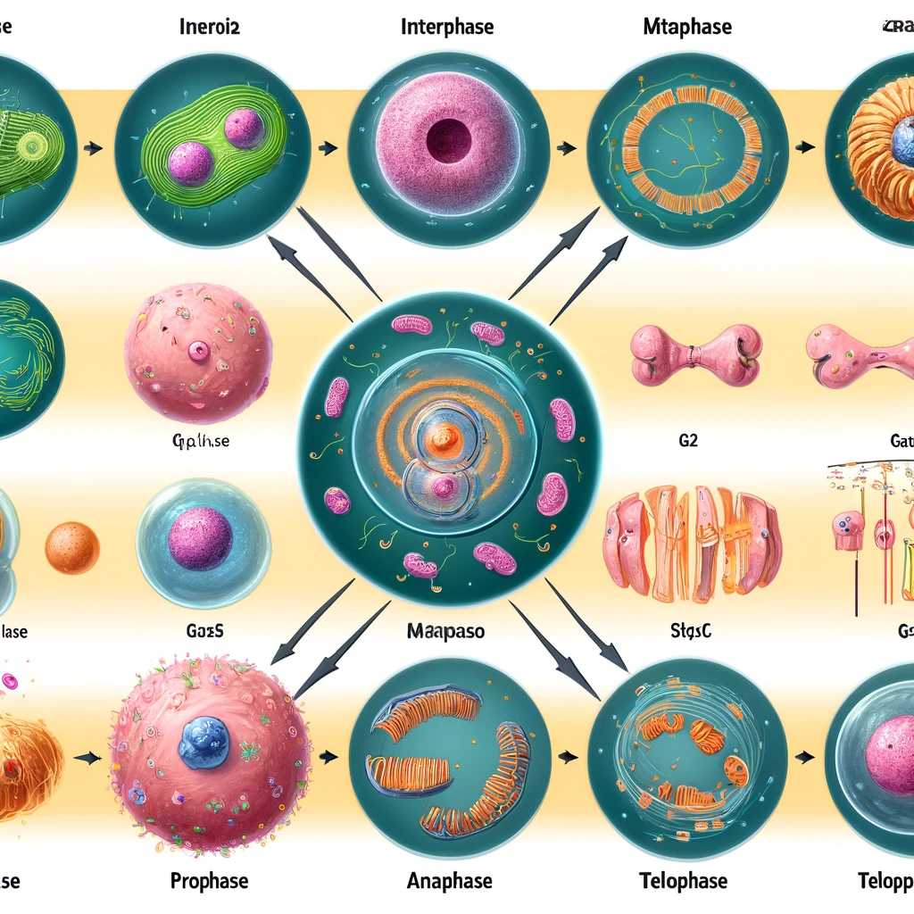
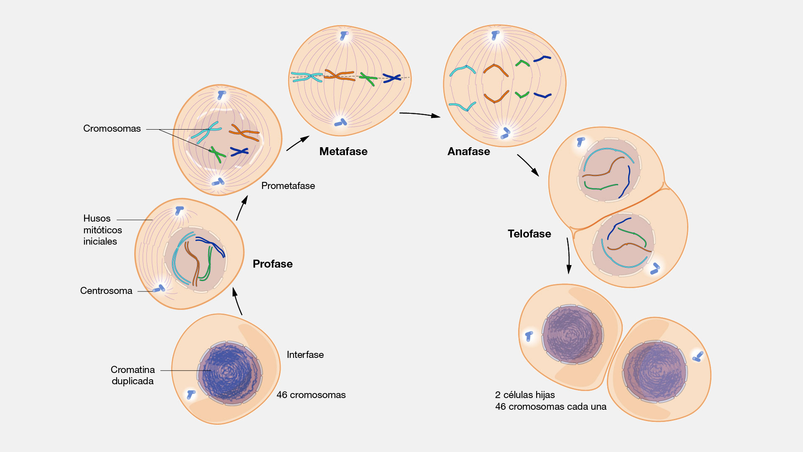

Texto

Crecimiento celular
El crecimiento celular es el proceso mediante el cual una célula aumenta de tamaño y se prepara para dividirse. Durante esta etapa, la célula absorbe nutrientes, produce energía y fabrica nuevas proteínas y orgánulos. Además, duplica su ADN, de manera que cada nueva célula reciba la misma información genética.
¿Qué ocurre durante el crecimiento celular?
La célula aumenta de tamaño.
Produce nuevos orgánulos celulares.
Fabrica proteínas necesarias para su funcionamiento.
Duplica su material genético (ADN).
Se prepara para la división celular.}
¿Por qué es importante?
El crecimiento celular es fundamental porque permite:
El crecimiento de los seres vivos.
La renovación de células envejecidas.
La reparación de tejidos dañados.
Preparar la célula para formar nuevas células.
División celular (Mitosis)

La mitosis es el proceso mediante el cual una célula madre se divide para formar dos células hijas idénticas, con el mismo número de cromosomas y la misma información genética.
La mitosis ocurre continuamente en el cuerpo de los seres vivos para permitir el crecimiento, el desarrollo y la reparación de tejidos.
Etapas de la mitosis
Profase El ADN se condensa formando los cromosomas.
Desaparece la membrana del núcleo. Se forma el huso mitótico.
Metafase Los cromosomas se alinean en el centro de la célula.
Anafase Las cromátidas hermanas se separan y se desplazan hacia polos opuestos.
Telofase Se forman dos nuevos núcleos.
Los cromosomas vuelven a convertirse en cromatina.
Citocinesis El citoplasma se divide y se originan dos células hijas idénticas.
¿Para qué sirve la mitosis?
Permite el crecimiento del organismo.
Repara tejidos dañados.
Sustituye células viejas o muertas.
Favorece el desarrollo de plantas y animales.